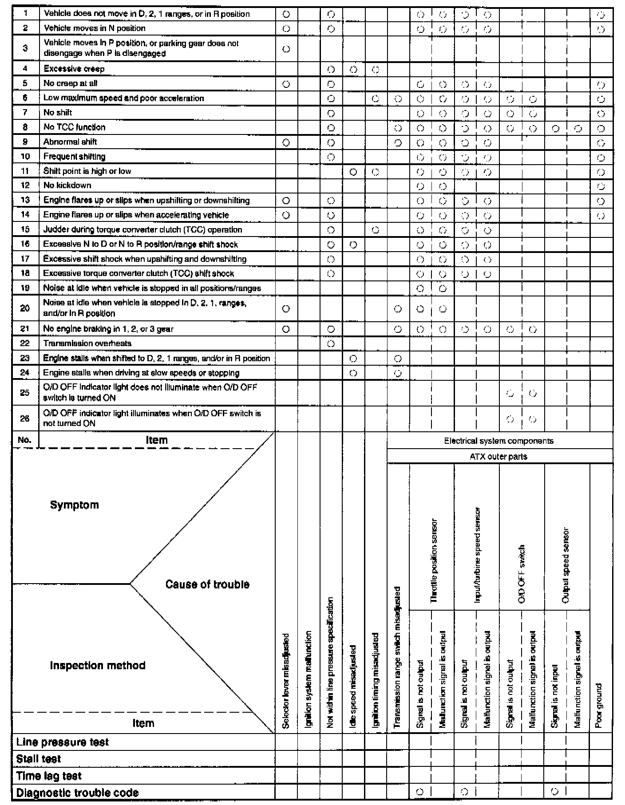
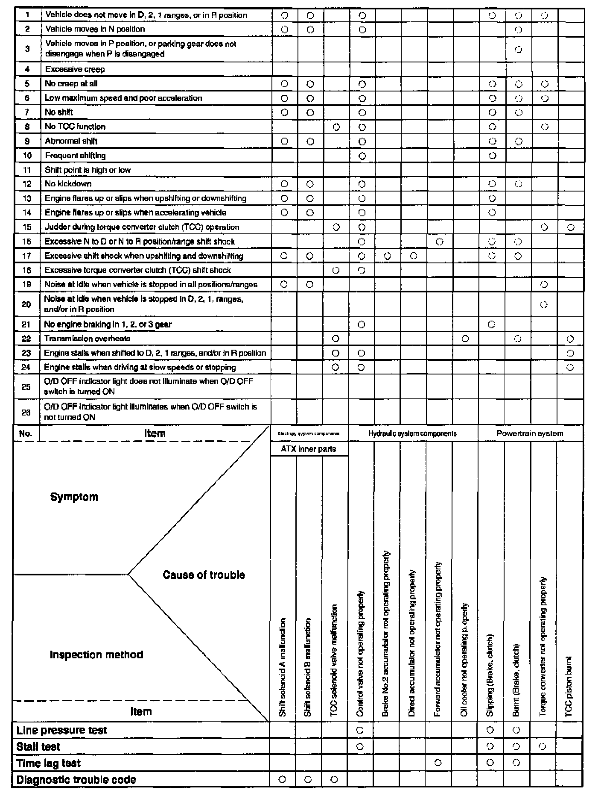

Operation CHARM
: Car repair manuals for everyone.
Home
>>
Mazda
>>
1999
>>
MX-5 Miata L4-1.8L DOHC
>>
Repair and Diagnosis
>>
Transmission and Drivetrain
>>
Automatic Transmission/Transaxle
>>
Testing and Inspection
>>
Initial Inspection and Diagnostic Overview
>>
Quick Diagnosis Charts
Quick Diagnosis Charts
Quick Diagnosis Chart

